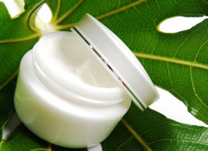

What does Natural mean in the world of cosmetics?
How natural is natural skincare?. There is no universally accepted definition of what it actually means to be natural. Logically it is quite possible to argue that everything is natural, or that nothing is natural. While nobody can tell you exactly what is natural and what is synthetic in any rigorous way, the answer is not so straightforward. Each person has a different interpretation and definition of the term natural. With the added complication of being a widespread global industry which currently does not have regulation or governance guiding terminology, that leaves the natural formulator and customer confused about what to call or define as natural or unnatural.
The answer is almost always: it depends on your definition of natural. and on your overall concept and philosophy.
Individual associations and certifying organizations have different definitions of the word natural. One particular ingredient considered “natural” by one organization might not be accepted as “natural” by another.
You may define “natural” as :
- existing in nature
- not synthetic
- coming from nature
- derived from natural resources
- natural-identiacal
- being made with no chemical reactions
- and so on. ...
Are there degrees of naturalness in the cosmetic world? Cold pressing is a traditional and natural way to produce oil. Seed oils are extracted without the use of chemicals or solvents at temperatures below 40°C which ensures that the full essence and character of the oil is preserved. This careful process means all the natural goodness within the seeds is preserved. Processing at low temperatures helps to produce low peroxide values (PV) and providing the oil is stored correctly will achieve an extremely good shelf life, ideally suited for the nutritional market. Once the oil has settled, it is filtered to guarantee its purity, and then bottled. It is as simple as that – no heating, no refining – just pure, healthy oil. Nearly all cold pressed oils are a natural source of Vitamin E, an important antioxidant, beneficial to general wellbeing
An example of cold processing would be raw, organic unrefined butters and oils such as shea butter, cocoa butter or coconut oil; this would be the extent of their processing. Most everyone would define this as natural.
Besides the natural process of cold-processing or filtration there are many naturally-occurring ingredients which are refined and processed, with methods such as bleaching or deodorizing where a chemical or substance is applied in order to achieve a desired effect. The end product is something which many would call natural, however it has been chemically altered in what some may define as an unnatural or chemical.
Some people consider fractionated coconut oil to be natural because it is clearly from natural origin , however, it has been chemically altered through the hot-press process which uses heat to separate the fatty acid chains to result in a refined, clarified, deodorized and liquid oil (at room temperature). Electric heaters can be attached to the press cylinder; as the seeds inside the cylinder heat up, they become softer and break down more easily. Although this method tends to generate higher quantities of oil, the heat can reduce the flavour, aroma and nutritional content of the oil. Although some may consider this to be natural, many would say this is not natural, as it has been chemically processed and altered from its natural, original form.
There are also naturally-occurring ingredients which are synthetically processed to become an entirely different chemical and structural substance. An example is jojoba wax, which is actually jojoba oil that has been hydrogenated by adding an H2(Hydrogen) molecule, along with a chemical catalyst such as Nickel, to result in a hard and brittle wax. Hydrogenation is often used to either reduce or saturate an organic compound; jojoba wax being an example of saturation. Jojoba wax is commonly used in the cosmetic industry as a thickener and moisturizing agent.
Then there is the issue of natural identical. There are many ingredients that are found in nature but can also be produced synthetically. Would a synthetic version of a natural material be considered natural? Some people would say yes, some would say no. For example, Sorbic acid, which is a preservative commonly used in the food and cosmetic industry, is originally derived from rowan berries. Sorbic acid is often now sold as a synthetic nature-identical, which is produced in a laboratory. All this is to suggest that what is considered natural varies from person to person and organization to organization.
Many people feel compelled to use skin care with natural ingredients only. This is understandable: humankind has synthesized enough harmful chemicals to scare virtually anyone. Still, the all-or-nothing approach may not be the most productive. First, according to modern science, biological effects of a particular chemical are the same whether it is isolated from natural sources or synthesized in the lab. Second, we should distinguish between the chemicals that are synthetic but structurally identical to the natural ones, and synthetic chemical not found in nature. Synthetic chemicals identical to the natural ones work exactly the same and can be used in exactly the same way. In fact, take away the labels, and you won't be able to distinguish between the two -- even if using cutting edge analytical equipment. Synthetic chemicals not found in nature are structurally different and may indeed work differently. However, there is no direct relationship between the benefits and dangers of a paticular chemical and its origin as a natural or manmade substance.
Many natural chemicals can be harmful, especially if misused. Many synthetic chemicals not found in nature are life-saving drugs.
Many people will say that the vast majority of cosmetics are not natural. But then nature just does not produce the types of chemicals that work best to solve the problems that cosmetics are meant to solve. There are few natural cleansing surfactants. There also aren’t many natural emulsifiers. Similarly, there aren’t a lot of great natural thickeners or chelating agents or preservatives. Even most of the natural colorants that exist in nature are not useable because they are contaminated with dangerous heavy metals.
The bottom line: A product's merits depend on whether its ingredients are proven safe and effective by comprehensive research and whether the concentration and delivery of the ingredients are appropriate.